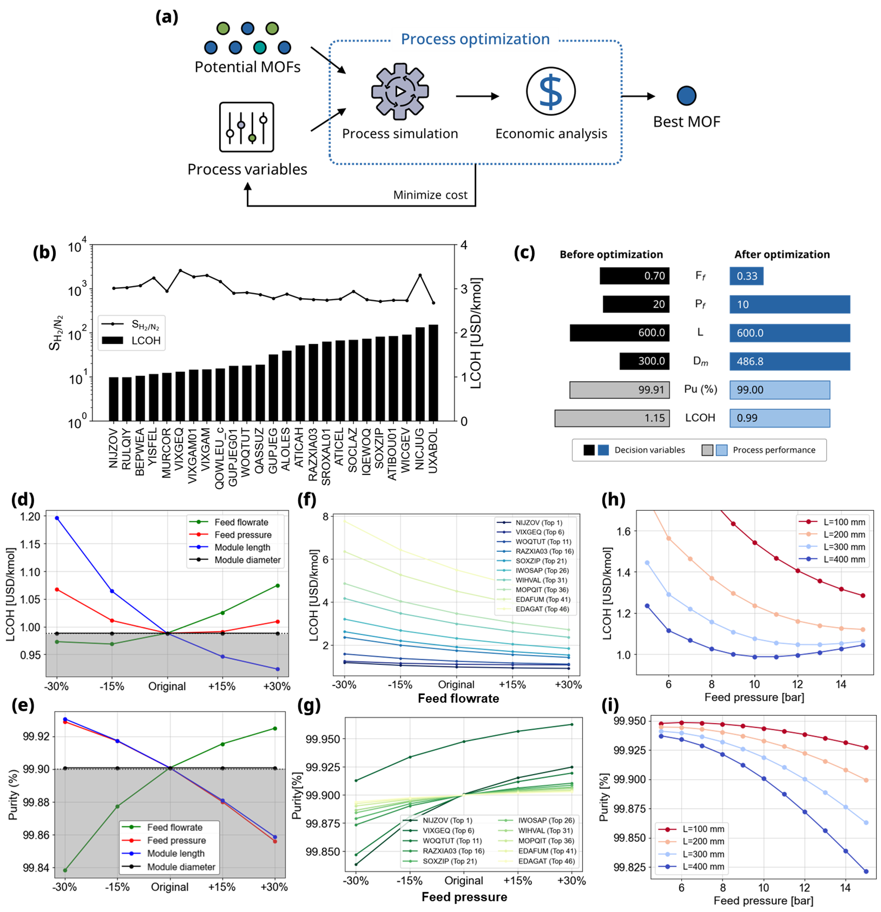
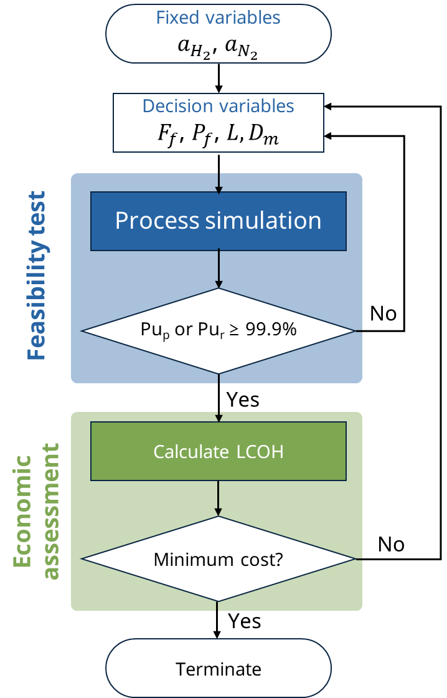
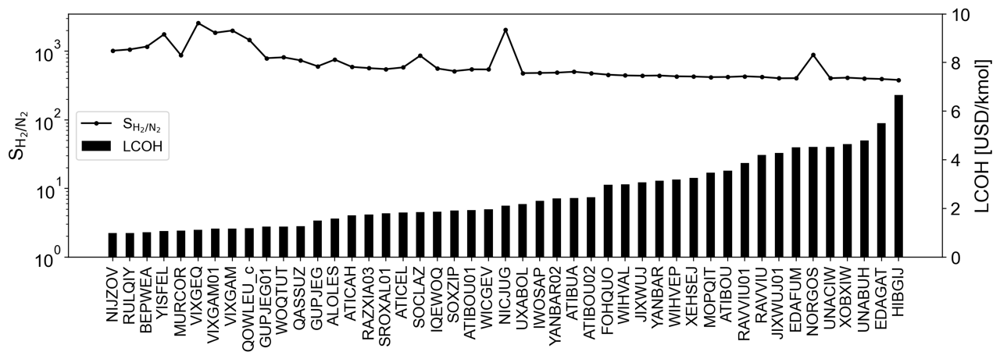
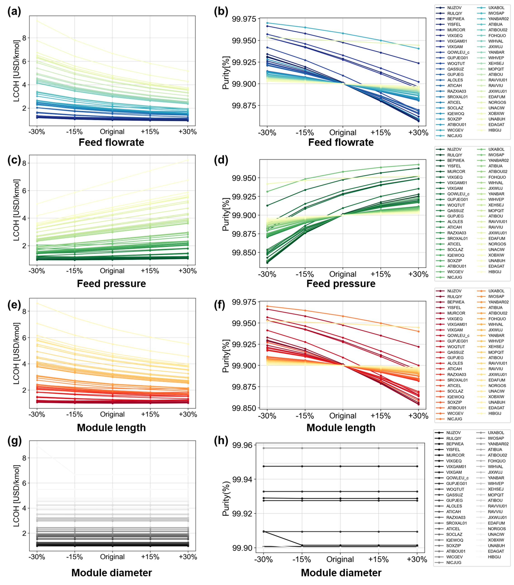

Example 2: Rigorous evaluation of membrane gas separation process based on economic analysis
Example description
In the second example, a robust evaluation using process optimization was conducted on the selected potential MOFs, leading to the identification of the most economically efficient MOF. Given the inherent variations in productivity and economic feasibility based on process conditions, an algorithm for process optimization was implemented. This algorithm minimizes the leveled cost of hydrogen (LCOH) production for each MOF, enabling an unbiased comparison of economic feasibility. The optimization considered four decision variables: feed flow rate, feed pressure, module length, and module diameter, each of which had a substantial influence over process performance. The optimal MOF was determined based on the results of this optimization. The objective function aimed to minimize LCOH, excluding conditions where product purity fell below 99.9%. To enhance algorithm convergence, a penalty was defined, representing the difference between the threshold and calculated purity.
{kind=link}
Method
In this example, process optimization and economic evaluation are performed on the potential MOF determined in the previous example and the best MOF is selected. Figure ref{fig:Casestudy2Algorithm} outlines an algorithm for minimizing the levelized cost of hydrogen (LCOH) by optimizing process variables based on membrane properties. The algorithm comprises two sub-loops. Initially, process simulations are executed based on membrane properties and decision variables, evaluating whether purity constraints are met for a given condition of the product. If purity fails to meet the criteria on either the permeate or retentate side, the algorithm iteratively updates the decision variables. Meanwhile, if the purity constraints are satisfied on either side, an economic evaluation loop is executed. Within this loop, the results analysis module calculates the total annual cost (TAC) and derives LCOH using the equation:
The adjustment of decision variables persists until the minimum LCOH is attained. In this example, the differential evolution method was employed for process optimization. Differential evolution (DE) is a stochastic optimization algorithm widely employed for solving optimization problems. Modeled after natural selection, DE involves the evolution of candidate solutions (individuals) in a population across generations to uncover optimal solutions for a specified problem cite{das2010differential}. DE efficiently addresses a broad spectrum of optimization issues owing to its simplicity, resilience, and efficacy. It excels in addressing problems featuring nonlinear and multimodal objective functions, surpassing the limitations of conventional gradient-based methods. Hence, DE was chosen to address the complex optimization problem in this example, implemented using the open-source Python package, mintinline{python}{scipy}. The decision variables encompass the flow rate ($F_f$) and pressure ($P_f$) of the feed side, and the length ($L$) and diameter ($D_m$) of the module, each with predefined boundaries: 0.05 mol/s $< F_f <$ 1 mol/s, 10 bar $< P_f <$ 30 bar, 0.1 m $< L <$ 0.6 m, and 0.27 m $< D_m <$ 0.3 m. The objective function is formulated to minimize the sum of LCOH and a constraint penalty, where the latter is expressed as the square of the difference between the purity threshold and the derived product purity. This example demonstrates the application of mintinline{python}{pySembrane} in the realms of optimization and membrane evaluation.
{kind=link}
Results analysis
Figure ref{fig:Casestudy2}(b) shows the membrane selectivity and optimal LCOH of 25 materials among potential MOFs, and the rest of these are referred to in SI. The most promising MOF, NIJZOV cite{mao1997synthesis}, exhibited an LCOH of 0.99 USD/kmol, while HIBGIJ cite{samsonenko2007microporous} MOF showed the lowest economic feasibility. Interestingly, MURCOR cite{rizzi2002carboxylate} MOF, despite its lower selectivity compared to VIXGEQ cite{hamdouni2013synthesis} MOF, proved to be more economically feasible, underscoring that selectivity alone may not dictate process viability. This indicates, as observed in previous results, that membrane selectivity may not perfectly represent performance in actual processes. The results for the 47 potential MOFs are available in the SI. Figure ref{fig:Casestudy2}(c) shows a comparison of decision variables and process performance before and after the process optimization of the most promising MOF. Initially, the H$_2$ purity was 99.91%, exceeding the 99.9% threshold by 0.01%. Process optimization focused on narrowing this purity margin, leading to reduced production costs. Consequently, the LCOH was reduced by 13.9%, declining from 1.15 USD/kg to 0.99 USD/kg. This reduction primarily resulted from notable decreases in feed flow rate and pressure among the four decision variables. Productivity increased as the flow rate of H$_2$ discarded to the retentate side decreased, and total annual cost decreased as energy consumption lowered by reducing feed pressure.
{kind=link}
Sensitivity analysis
The sensitivity of LCOH and H$_2$ purity concerning the four decision variables is shown in Figure ref{fig:Casestudy2}(d) and (e). The results represent the impact of each decision variable on LCOH and product purity for the best MOF membrane, and the x-axis denotes the optimal value after optimization, ranging from -30% to +30% of the optimal value. The gray area refers to an infeasible condition where product purity falls below 99.9%. As depicted in Figure ref{fig:Casestudy2}(d), LCOH is sensitive to the sequence of module length, feed flow rate, pressure, and module diameter. Conversely, Figure ref{fig:Casestudy2}(e) indicates that product purity is sensitive in the order of feed flow rate, pressure, module length, and module diameter. This sensitivity arises due to the inherent trade-off relationship between product purity and process economics. For instance, the increase in production on the permeate side has a more pronounced impact on LCOH than the rise in process installation cost due to an increase in module length. However, the production increase on the permeate side by longer modules is caused by the large permeation of N$_2$ and results in reduced H$_2$ purity, leading to an infeasible condition. Conversely, feed pressure exhibits a convex shape based on the optimal value. This trend arises from decreased energy consumption with lower feed pressure, accompanied by a decrease in H$_2$ production, and increasing LCOH. Also, the opposite condition in which feed pressure increases is the same. Figures ref{fig:Casestudy2}(f) and (g) present the sensitivity analysis results for module length and feed flow rate, which are the most sensitive variables to LCOH and product purity, respectively. Module length demonstrates an inversely proportional trend with LCOH, showing less sensitivity in materials with higher economic efficiency. On the contrary, product purity exhibits an increasing trend with the rise in feed flow rate, especially in materials with higher economic efficiency, indicating higher sensitivity. The following Figures ref{fig:Casestudy2}(h) and (i) illustrate the impact of feed pressure and module length on the process performance of the optimal MOF. Similar to Figures ref{fig:Casestudy2}(d–g), an increase in module length leads to a decrease in both LCOH and purity. In contrast, the relationship between feed pressure and LCOH initially shows a steady decrease with increasing module length, becoming more concave at longer lengths. This implies that the optimal feed pressure changes with module length, decreasing as the module length increases. Notably, at module lengths of 200 mm and 300 mm, the H$_2$ purity at the point with the lowest LCOH could not exceed the threshold, 99.9% of H$_2$. This means that fixing the module length at 200 mm and feed pressure at 15 bar might exclude the MOF identified as best in this study from the list of potential candidates. The results emphasize that optimal process conditions vary based on the characteristics of each membrane. Hence, evaluating membranes under fixed conditions could lead to biased decisions. Tailoring operating conditions to the specific characteristics of each membrane enables a more accurate evaluation. Additionally, understanding the precise sensitivity of LCOH and product purity under different conditions provides valuable insights for future process optimization and design, enhancing the overall understanding of membrane behavior in various scenarios.
{kind=link}
Source code
Initially, import pySembrane package and the necessary libraries for data processing, optimization, and visualization. Load the H$_2$ purity data for each MOF derived from Example 1, and from this, select MOFs where the product purity exceeds 99.9%. The .csv file loaded in the code below can be downloaded from GitHub or obtained by executing Example 1.
### Data import ###
from simulator import *
import numpy as np
import matplotlib.pyplot as plt
import pandas as pd
from scipy.optimize import differential_evolution
data = pd.read_csv('240219_Casestudy1_results.csv')
pot_MOF = data[data['Pu_perm_0.7']>0.999]
pot_MOF.describe()
Define parameters for conducting process simulations throughout the example. In this example, the feed flow rate and pressure, and module length and diameter are not specified as these are the decision variables for the process optimization.
### Module design ###
n_component = 2 # number of gas components
configuration = 'COFS' # module configuration
L = 0.6*1e3 # fiber length (mm)
D_module = 0.3*1e3 # Module diameter (mm)
N_fiber = 100 # number of fiber (-)
N = 100 # number of nodes (-)
### Membrane property ###
D_inner = 100*1e-1 # Membrane inner diameter (mm)
D_outer = 250*1e-1 # Membrane outer diameter (mm)
### Gas property ###
Mw_i = np.array([2e-3, 28e-3]) # molar weight (kg/mol)
rho_i = np.array([0.08988, 1.1606])*1e-9 # density (kg/mm3)
mu_i = np.array([0.94e-3, 1.89e-3]) # viscosity (Pa s)
### Mass transfer property ###
k_mass = 1e-1 # Mass transfer coeff. (mm/s)
### Operating conditions ###
# Boundary conditions
T = 273 # temperature (K)
y_feed = np.array([0.75, 0.25]) # mole fraction (H2, N2)
Define parameters used for the economic assessment of the membrane process.
### Economic analysis parameters ###
MODP = 10/1000000 # Total membrane module cost (US$/ft2)
mem_life = 4 # membrane life (years)
t = 5 # project year
r = 0.1 # interest rate (%)
R_gas = 8.314 # Gas constant (J/K mol)
k = 1.4 # Heat capacity ratio
effi_ref = 0.8 # compressor efficiency
Define an objective function for the optimization of four process variables aimed at minimizing the Levelized Cost of Hydrogen (LCOH). Firstly, the function takes decision variables to perform a membrane process simulation. Subsequently, it defines the system’s outlet streams (F_perm, F_ret) to derive H2 purity after the process simulation terminated. If the product purity under given conditions exceeds 99.9%, an economic assessment is performed, and the LCOH is derived. The squared difference between the calculated purity and the threshold is defined as a penalty, optimizing to minimize both LCOH and penalty. If purity does not exceed 99.9%, it returns a significantly large value, indicating an infeasible condition.
### Objective function for LCOH minimization ###
def ObjFunc(x):
ff, pf, ll, D_m = x[0], x[1], x[2], x[3]
mem = MembraneProc(configuration, ll, D_m, N_fiber,
n_component, n_node = N)
mem.membrane_info(a_perm, D_inner, D_outer)
mem.gas_prop_info(Mw_i, mu_i, rho_i)
mem.mass_trans_info(k_mass)
mem.boundaryC_info(y_feed, pf, ff, T)
mem.initialC_info()
res = mem.run_mem(cp=False, cp_cond = [1, 298])
F_perm = res[-1, n_component:n_component*2]
F_ret = res[-1, :n_component]
F_perm[F_ret<0] = (F_feed*y_feed)[F_ret<0]
F_ret[F_ret<0] = 0
pu_list = [flow[0]/sum(flow) if sum(flow)>0 else 0 for flow in [F_ret, F_perm]]
if max(pu_list) >= 0.999:
penalty = abs(max(pu_list)-0.999)**2
lcoh = mem.CalculTAC(MODP, mem_life, t, r, k, effi_ref)/(F_perm[0]*28800000*1e-3)
# USD / kmol H2
return lcoh+penalty
else:
lcoh = 1e30
penalty = max(pu_list)
return lcoh/penalty
Set the boundaries for the four decision variables and perform optimization. A ‘for’ loop individually explores optimal values for each MOF, defining the target MOF and repeating optimization. Upon completion, save the determined process variable values and LCOH, exporting them to a .csv file. The simulation results can be downloaded from GitHub or obtained by executing the code below. Note that the differential evolution method used for optimization introduces randomness, which may result in slight variations in computational outcomes.
bounds = [(0.05,1),(10,30),(L/6, L), (D_module/1.1, D_module*2)]
proc_cond = []
mssg_list = []
lcoh_list = []
for ii in range(len(pot_MOF)):
target_mof = pot_MOF.iloc[ii,:]
a_perm = np.array([target_mof[ii] for ii in ['a_H2(mol/(mm^2 bar s))', 'a_N2(mol/(mm^2 bar s))']])
result = differential_evolution(ObjFunc, bounds=bounds,
maxiter = 50, tol = 1e-2)
proc_cond.append(result.x)
mssg_list.append(result['message'])
lcoh_list.append(result.fun)
pot_MOF[['Ff_opt', 'Pf_opt', 'L_opt', 'D_opt']] = np.array(proc_cond)
pot_MOF['LCOH_opt'] = lcoh_list
pot_MOF.to_csv('240221_Casestudy2_results.csv', index=0)
To verify the optimization results, derive the product’s purity for the determined process variables.
ex2_res = pd.read_csv('240221_Casestudy2_results.csv')
lcoh_list = []
pu_list = []
for ii in range(len(ex2_res)):
target_mof = ex2_res.iloc[ii,:]
ff_opt, pf_opt, l_opt, dm_opt = target_mof[['Ff_opt', 'Pf_opt', 'L_opt', 'D_opt']]
a_perm = np.array([target_mof[ii] for ii in ['a_H2(mol/(mm^2 bar s))', 'a_N2(mol/(mm^2 bar s))']])
mem = MembraneProc(configuration, l_opt, dm_opt, N_fiber,
n_component, n_node = N)
mem.membrane_info(a_perm, D_inner, D_outer)
mem.gas_prop_info(Mw_i, mu_i, rho_i)
mem.mass_trans_info(k_mass)
mem.boundaryC_info(y_feed, pf_opt, ff_opt, T)
mem.initialC_info()
res = mem.run_mem(cp=False, cp_cond = [1, 298])
F_perm = res[-1, n_component:n_component*2]
F_ret = res[-1, :n_component]
F_perm[F_ret<0] = (ff_opt*y_feed)[F_ret<0]
F_ret[F_ret<0] = 0
pu_ = [flow[0]/sum(flow) if sum(flow)>0 else 0 for flow in [F_ret, F_perm]]
pu_list.append(pu_)
LCOH = mem.CalculTAC(MODP, mem_life, t, r, k, effi_ref)/(F_perm[0]*28800000*1e-3)
lcoh_list.append(LCOH)
ex2_res[['Pu_ret_opt','Pu_perm_opt']] = np.array(pu_list)
Below is the code for visualizing the optimization results for 47 potential MOFs, allowing for the observation of trends between the optimal LCOH and membrane selectivity for each MOF.
opt_sort = ex2_res.sort_values(by='LCOH_opt')
ads_names = [_name[:-6] for _name in opt_sort['Adsorbent']]
fig, ax1 = plt.subplots(dpi=200, figsize=(14,4))
line = ax1.plot(ads_names, opt_sort['P_H2(Barrer)']/opt_sort['P_N2(Barrer)'],
color='k', marker='o', label ='S$\mathrm{_{H_2/N_2}}$', markersize=3)
ax2 = ax1.twinx()
bar = ax2.bar(ads_names,opt_sort['LCOH_opt'],
color='k', width=0.5, label='LCOH')
plots = line+ [bar]
labels = [l.get_label() for l in plots]
ax1.legend(plots, labels, loc='center left', fontsize=13)
ax1.set_yscale('log')
ax1.set_ylim(1,3.5e3)
ax2.set_ylim(0,10)
ax1.set_xticklabels(labels=ads_names, rotation=90, fontsize=14)
ax1.set_ylabel('S$\mathrm{_{H_2/N_2}}$')
ax2.set_ylabel('LCOH [USD/kmol]')
plt.show()
The following codes perform sensitivity analysis from various perspectives to analyze the impact of decision variables on LCOH and product purity. Firstly, by executing the code below, can analyze the influence of each variable on the performance of the best MOF.
### Sensitivity analysis ###
rr_list = [0.7, 0.85, 1, 1.15, 1.3]
rr_case = []
for ii in range(len(rr_list)*4):
_tmp = [1,1,1]
insert_idx, ratio_idx= divmod(ii,len(rr_list))
_tmp.insert(insert_idx,rr_list[ratio_idx])
rr_case.append(_tmp)
var_name = ['Feed flowrate', 'Feed pressure', 'Module length', 'Module diameter']
x_labels = ['-30%', '-15%', 'Original', '+15%', '+30%']
c_list = ['g', 'r', 'b', 'k']
best_mof = opt_sort.iloc[0,:]
sa_res = []
for f_fac, p_fac, l_fac, d_fac in rr_case:
F_feed, P_feed, L, Dm = best_mof['Ff_opt']*f_fac, best_mof['Pf_opt']*p_fac, best_mof['L_opt']*l_fac, best_mof['D_opt']*d_fac
a_H2, a_N2 = best_mof[['a_H2(mol/(mm^2 bar s))', 'a_N2(mol/(mm^2 bar s))']]
a_perm = np.array([a_H2, a_N2])
mem = MembraneProc(configuration, L, Dm, N_fiber,
n_component, n_node = N)
mem.membrane_info(a_perm, D_inner, D_outer)
mem.gas_prop_info(Mw_i, mu_i, rho_i)
mem.mass_trans_info(k_mass)
mem.boundaryC_info(y_feed, P_feed, F_feed, T)
mem.initialC_info()
res = mem.run_mem(cp=False, cp_cond = [1, 298])
err = mem.MassBalance()
F_perm = res[-1, n_component:n_component*2]
F_ret = res[-1, :n_component]
F_perm[F_ret<0] = (F_feed*y_feed)[F_ret<0]
F_ret[F_ret<0] = 0
lcoh = mem.CalculTAC(MODP, mem_life, t, r, k, effi_ref)/(F_perm[0]*28800000*1e-3)
sa_res.append([F_feed,P_feed, L, Dm, res[-1,0], res[-1,1], res[-1,2], res[-1,3], err, lcoh])
sens_lcoh = np.array(sa_res)
Below is the code for plotting the sensitivity analysis results for the best MOF, which, upon execution, yields Figures 5(d) and (e).
### Sensitivity analysis plot ###
plt.figure(dpi=90, figsize=(6,4))
for ii in range(4):
res_plot = np.array(sens_lcoh[ii*5:(ii+1)*5, -1])
plt.plot(x_labels, res_plot, label = var_name[ii], marker='o', c=c_list[ii],
markersize=5)
plt.axhline(best_mof['LCOH_opt'], c='k', linestyle=':')
plt.legend(loc='best', fontsize=13)
plt.ylabel('LCOH [USD/kmol]')
plt.tight_layout()
plt.grid(alpha=0.5)
plt.show()
plt.figure(dpi=90, figsize=(6,4))
for ii in range(4):
res_plot = np.array(sens_lcoh[ii*5:(ii+1)*5,:])
purity_plot = res_plot[:,6]/(res_plot[:,6]+res_plot[:,7])*100
plt.plot(x_labels, purity_plot, label = var_name[ii], marker='o', c=c_list[ii],
markersize=5)
plt.axhline(99.9, c='k', linestyle=':')
plt.legend(loc='best', fontsize=13)
plt.ylabel('Purity (%)')
plt.tight_layout()
plt.grid(alpha=0.5)
plt.show()